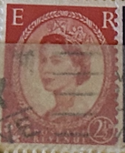
| SOURCE | TITLE| IMAGE MATCH | click to source page |
| eBay | Vtg Medici Society PPC Signed Margaret W. Tarrant Queen Elizabeth II stamp 1955 | eBay | 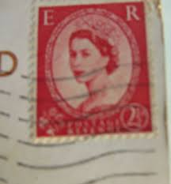 |
| eBay | Great Britain 1961 Queen Elizabeth II 2 1/2d Sc#357ap Used Stamp | eBay | 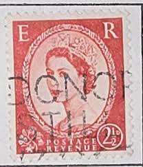 |
| HipStamp | Great Britain #357 2 1/2P Elizabeth, used EGRADED XF 93 XXF | Great Britain, General Issue Stamp / HipStamp | 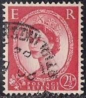 |
| eBay | RARE-Queen Elizabeth II, 2 1/2D Red Stamp | eBay Australia | 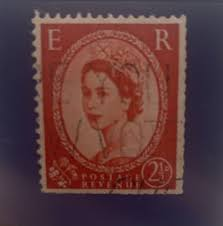 |
| eBay.de | United Kingdom 1953 - Queen Elizabeth II. - 2 1/2 d - Mi.Nr. 261 | eBay.de | 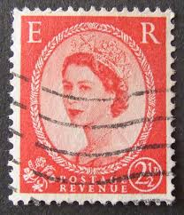 |
| eBay | Red British Elizabeth II Stamps for sale | eBay | 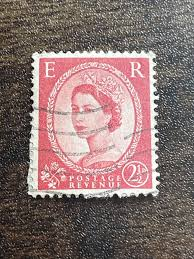 |
| eBay UK | 1952/70 UK Postage Stamp | eBay UK | 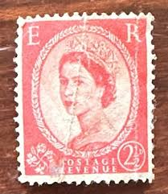 |
| World Stamps Project | Great Britain, Elizabeth II: Wilding Definitives, Varieties – World Stamps Project | 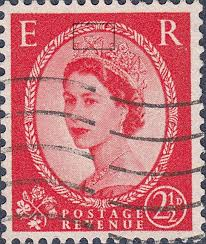 |
| eBay | Rare Printing 2 1/2D E R Postage Revenue Stamp - Queen Elizabeth ll | eBay | 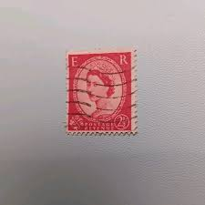 |
| sellosmundo.com | Sello: Norman Rockwell, ilustrador, fotógrafo y pintor. 15c multicolorde Liberia Africa | 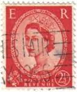 |
| eBay | Royalty British Elizabeth II Stamps 2 1/2 d Denomination for sale | eBay | 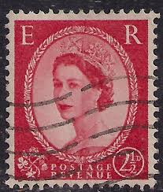 |
| HipStamp | Great Britain 296 Queen Elizabeth II 1952 | Great Britain, General Issue Stamp / HipStamp | 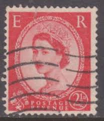 |
| eBay | Red British George VI Stamps | eBay | 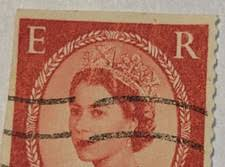 |
| Stamp Community Forum | 1955 UK 3-P Strip, Watermark? - Stamp Community Forum | 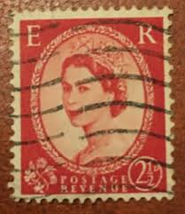 |
| HipStamp | GB 1959 QE2 2 1/2d Carmine Red Wilding Wmk 179 SG 574 type 2 ( K261 ) | Great Britain, Stamp / HipStamp | 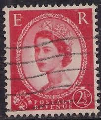 |
| eBay | GB Postage Revenue ~ Red 2½D Stamp ~ Queen Elizabeth II ~ Posted ~ 1953 ~ B021 | eBay | 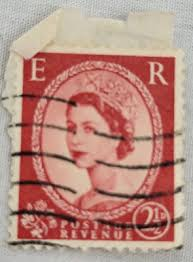 |
| eBay | 2-1/2d ER Postage Revenue Stamp Queen Elizabeth II Great Britain 1955 TKS211* | eBay | 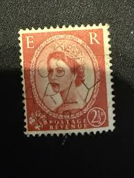 |
| eBay | Foreign Stamp Postage Revenue 2 1/2d Used - #7310 | eBay | 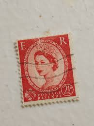 |
| eBay | GB Postage Revenue ~ Red 2½D Stamp ~ Queen Elizabeth II ~ Posted ~ 1953 ~ D23 | eBay | 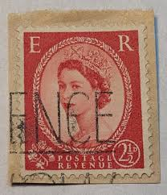 |
| eBay UK | Rare Queen Elizabeth 21/2D Scarlet Stamp | eBay UK | 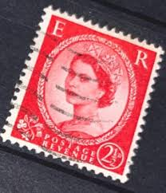 |
| Bill Barrell Ltd | 131719 1929 MAIL GLASGOW TO BRIDGNORTH, RE-DIRECTED TO UXBRIDGE WITH ' – Bill Barrell Ltd | 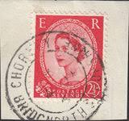 |
| eBay.de | Gestempelte Briefmarken aus Großbritannien online kaufen | eBay.de | 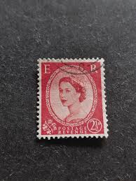 |
| eBay | GB Used Stamp - QEII Wilding Definitive, 1952 - Carmine Red 2 1/2d, SG 519 | eBay | 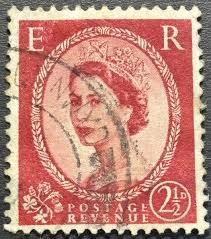 |
| eBay | GREAT BRITAIN SG-565, SCOTT # 321c, GRAPHITE LINES ON BACK, USED, GREAT PRICE! | eBay | 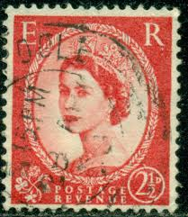 |
| Мешок | Водяная» в разделе Марки. по возрастанию цены, стр. 12.5 | 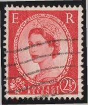 |
| Dreamstime.com | 644 British Postage Stamp Queen Elizabeth Ii Stock Photos - Free & Royalty-Free Stock Photos from Dreamstime | 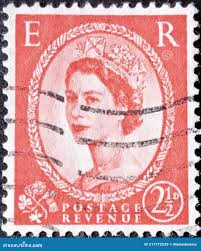 |
| atahualpa.com | Seltene Briefmarke Queen Elizabeth Postage Revenue 2 1/2 D | 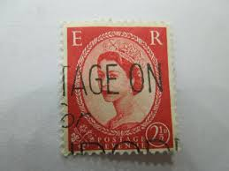 |
| DBA.dk | England - AFA 280 - Stemplet | DBA | 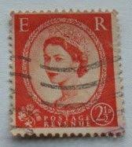 |
| eBay | Royalty British Elizabeth II Stamps 2 1/2 d Denomination | eBay | 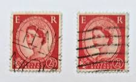 |
| eBay | Great Britain 1876 2.5p Queen Victoria Stamp #67 P11 Used CV $60 FREE Ship after | eBay | 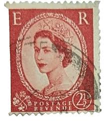 |
| eBay | GB Postage Revenue ~ Red 2½D Stamp ~ Queen Elizabeth II ~ Posted ~ 1953 ~ 07 | eBay | 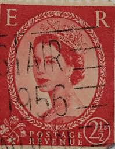 |
| Dreamstime.com | Used British Postage Stamp from the Queen Elizabeth II Series - Predecimal Wilding Editorial Stock Image - Image of canceled, antique: 217772539 | 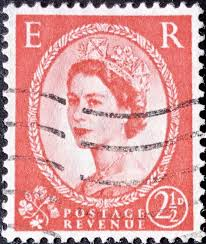 |
| Vendora.cy | Γραμματόσημα με τη Βασίλισσα Ελισάβετ… - € 1,00 - Vendora.cy | 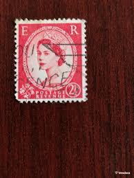 |
| eBay | GB Postage Revenue ~ Red 2½D Stamp ~ Queen Elizabeth II ~ Posted ~ 1953 ~ 09 | eBay | 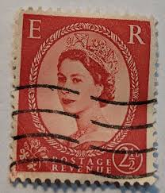 |
| Todocolección | sello postal reino unido 1953 , 2 1/2 penique, - Compra venta en todocoleccion | 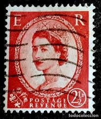 |
| eBay | GB Postage Revenue ~ Red 2½D Stamp ~ Queen Elizabeth II ~ Posted ~ 1953 ~ E04 | eBay | 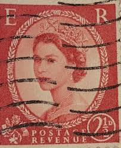 |
| eBay | GB Postage Revenue ~ Red 2½D Stamp ~ Queen Elizabeth II ~ Posted ~ 1953 ~ X85 | eBay | 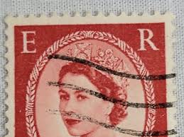 |
| ebid.net | Colour Postcard - Basil Brush on eBid United Kingdom | 211172893 | 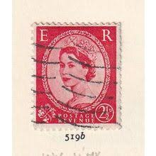 |
| Inherited assorted stamps, need help! : r/stamps | 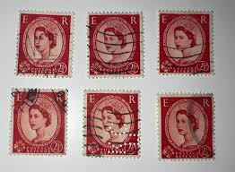 | |
| Alamy | Queen elizabeth ii 1952 hi-res stock photography and images - Alamy | 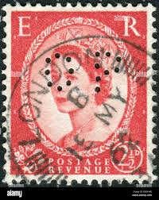 |
| eBay | 1958 Rare Queen Elizabeth ER Postage Revenue Vintage Stamp Red | eBay | 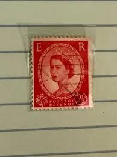 |
| eBay | Great Britain Vintage Stamp Booklet - Complete - Oct 1955 Queen Elizabeth II B48 | eBay | 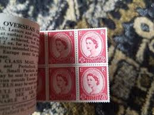 |
| eBay | Great Britain Stamp Queen Elizabeth II 2 1/2d Used 321 Wave Cancel | eBay | 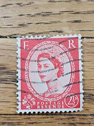 |
| eBay.de | Briefmarke Großbritannien England Queen Elisabeth 2 1/2 Pence (A522) | eBay.de | 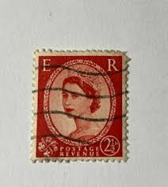 |
| eBay | Queen Elizabeth 2 Stamps Unused | eBay | 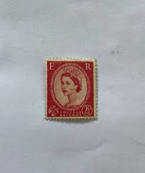 |
| GB Stampline | Wilding 2259 1st Class Upright Watermark - GB Stampline | 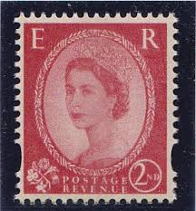 |
| eBay | Great Britain Vintage Stamp Booklet - Complete - Queen Elizabeth II - B59 | eBay | 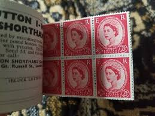 |
| Shutterstock | 1+ Thousand Queen Elizabeth 1 Royalty-Free Images, Stock Photos & Pictures | Shutterstock | 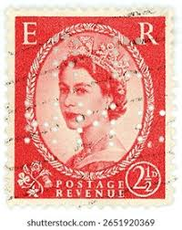 |
| commonwealthstamps.com | Stamps Great Britain 1955 Queen Elizabeth II Definitive SG 544a Fine Used Scott 321 | 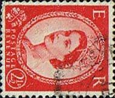 |
| cui.org.uk | Aughnacloy, County Tyrone | |
| marina.com.pl | Colección De Sellos Gran Bretaña 2025 ¡Edición Completa Con La Realeza Británica! | |
| IG Stamps | SG544a 2 d Type I Carmine-Red 1955 Edward Crown Sideways Watermark Wilding Stamps | |
| HipStamp | Great Britain-10 GPO Stamp Stitched Booklets Q.E.11 Mognh-Lot-10 Booklets | Great Britain, General Issue Stamp / HipStamp | |
| eBay | Great Britain Stamp Queen Elizabeth II 2 1/2d Used Wave Cancel 296 | eBay | |
| PicClick UK | GB QEII 1952-54 2d RED-BROWN WMK INVERTED SG518Wi USED - SEE PHOTOS £8.65 - PicClick UK | |
| YouTube | Great Britain Wilding Stamps - YouTube | |
| eBay | Briefmarke: Serie Alle Welt: 2½ D, Postage Revenue | eBay | |
| eBay UK | Britain British UK Stamp, 2 1/2d red, Queen Elizabeth II QE2, circa 1952 used | eBay UK | |
| PicClick UK | RARE ER POSTAGE Revenue 2 1/2 d Red Queen Elizabeth II Off Paper £208.70 - PicClick UK |